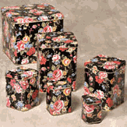
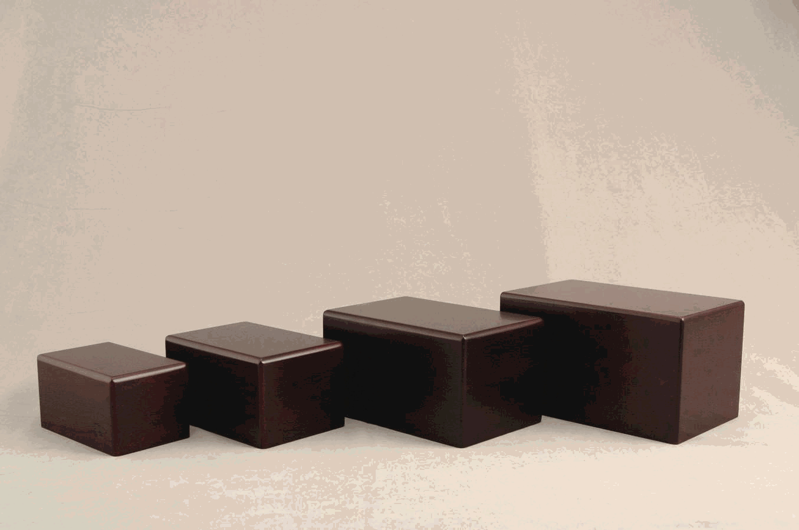
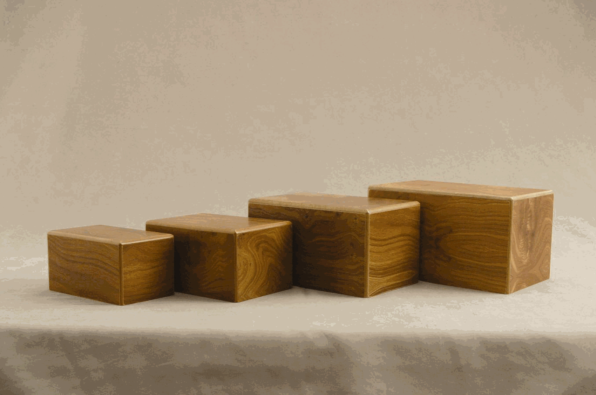
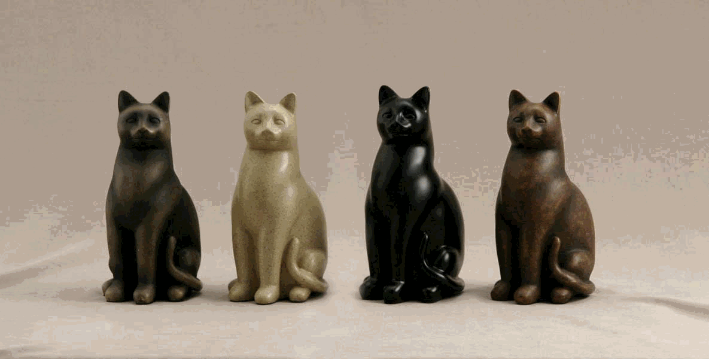
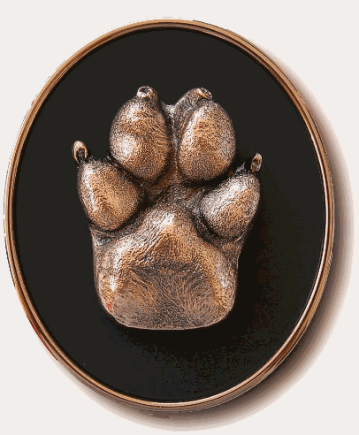
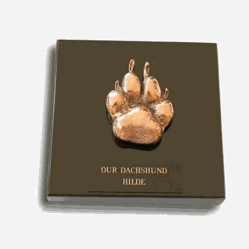
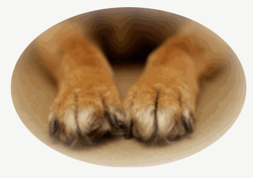
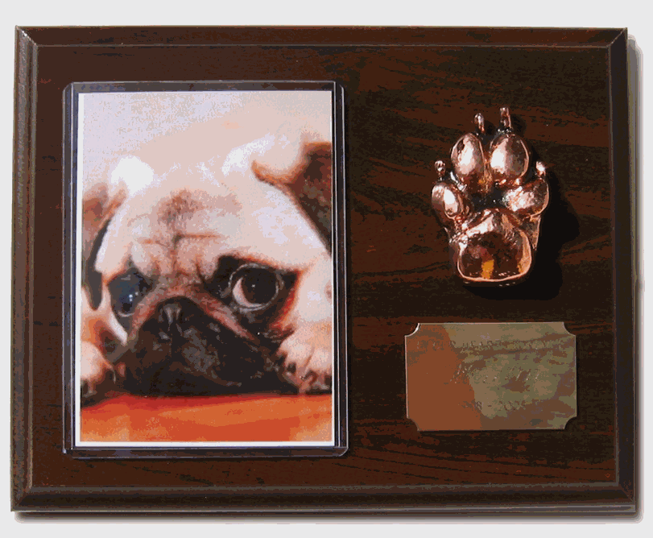
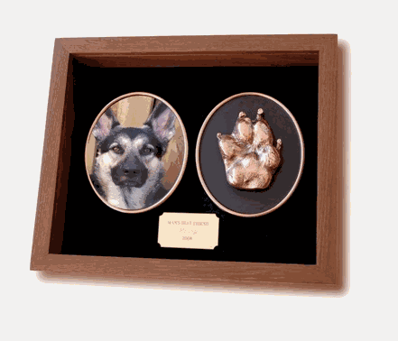

Pet Cremation Services
Private One at a time Pet Cremation Service
Cremation of your beloved pet
in a state of the art crematory allows you a choice of keeping your pet’s
remains with you even if you move, or scattering
your pet’s remains in a favorite place.
Prices range from $125.00 and up and depend on the weight of your pet.
A decorative tin and cremation certificate are also included in our
Basic One at a Time Pet Cremation Service.
Basic One at a Time Pet Cremation Service
Includes private individual one at a time pet cremation, certificate of individual cremation, floral deco tin. Prices start at $125.
Basic plus One at a Time Pet Cremation Service
Includes private individual one at a time pet cremation, certificate of individual cremation, choice of natural or cherry wood grain box. A brass name plate with engraving (18 spaces per line) may be added for $10.00 for one line and $5.00 for each additional line. Prices start at $155.00.
Basic One at a Time Pet Cremation Service
With Your Choice of
Urn
 Includes private individual
one at a time pet cremation,
certificate of individual cremation,
your choice of urn. View Urn
selection.
Includes private individual
one at a time pet cremation,
certificate of individual cremation,
your choice of urn. View Urn
selection.
Prices start at $125.00 plus the cost of your selected urn.
Elite Cat One at a Time Cremation Service
Includes private individual
one at a time pet cremation,
certificate of individual cremation,
and choice of stone flecked finishes in Sable, Fawn, Black, or Tabby. Elite
cats are crafted with resin, each cat has a felt lined bottom with a
threaded plug for secure closure.
Prices start at $155.00.
Optional round or heart shape brass name plate with
chain $25.00.
$155.00.
Optional round or heart shape brass name plate with
chain $25.00.
Bronze Paw Print Service
    
The bonds between humans and our animals are intense, but it is all too
brief. Since most pets live an average of ten to fifteen years, many of us
will have multiple companions during our lifetime. Each relationship is
special in its own right, but we never forget our furry friends who have
passed on before. Bronze Paw prints will become three-dimensional treasures
allowing us to "touch" our pets long after they have departed.
Have your pet's paw print cast in durable bronze from your pet’s paw,
sure to bring a big smile to any pet lover's face for years to come.
Please notify us prior to the cremation to order your Bronze Paw Print.
Our Bronze Paw
Prints may be cast from your living pets, for the perfect gift for that
special someone in your life. You are welcome to view the casting process of
your pet's paw print. Cherry
or Oak Plaques, Shadow Box, Paper Weight, or Black and Bronze Plaque.
Prices start at $75.